- 00000018WIA305EEE20GYZ
- id_131062883.19
- May 18, 2022 3:50:54 PM
Body Coil Tuning
Prerequisites
| Required persons | Preliminary requirements | Procedure | Finalization |
|---|---|---|---|
| 1 | - | - | - |
| Item | Quantity | Effectivity | Part number | Manufacturer |
|---|---|---|---|---|
| USB Memory | 1 | - | - | - |
| USB Mouse (For Network Analyzer operation) | 1 | - | - | - |
| Network Analyzer Service Tool Kit | 1 | - |
5336593-2, 5336593-3, or 5336593-4 | - |
| Body Loader w/ Sphere Phantom | 1 | - |
2371511 | - |
| FOAM SUPPORT ECMT AND PHANTOM | 1 | - |
5554839 | - |
| ||||||||||||
| Condition | Reference | Effectivity |
|---|---|---|
|
Body Coil Isolation is done. | - | - |
|
System must be in scanning condition | - | - |
|
RF body coil temperature must be stable and match magnet room temperature | - | - |
About this task
Body Coil Tuning is performed by adjusting Variable Capacitors (VC1, VC2, VC3) to tune f1, f2, f3, and MagS21 according to the navigation of the Network Analyzer screen.
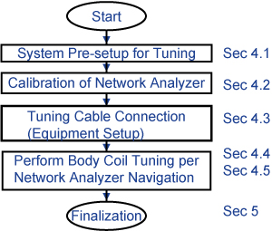
System Pre-setup for Tuning
Procedure
Calibration of the network analyzer
Procedure
Connect Bias T at Port1 and Port2. Do not connect the Bias cable at this time.CAUTION 
Figure 4. Bias T installation 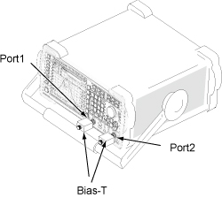
Notice  Note: Recommend to connect a mouse to one of the USB ports on the network analyzer.Power ON the network analyzer. If no power seen confirm AC power switch on rear of unit in 'I' position.
Note: Recommend to connect a mouse to one of the USB ports on the network analyzer.Power ON the network analyzer. If no power seen confirm AC power switch on rear of unit in 'I' position.If not using the mouse, it is necessary to use hard key. For example, select [Menu] hardkey and then use arrow (<, >) hardkeys to navigate and highlight, and [ENTER] hardkey to select from menu.

Figure 5. Power ON 
The following screen shows up. For button selection, proceed to Step 7.Notice 
Figure 10. Calibration start menu 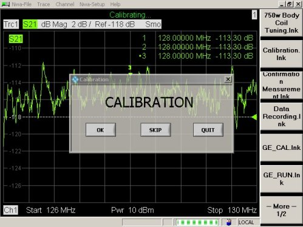
- Connect port 1 and port 2 cables through female barrel.
Figure 17. Cable Connection 2 
Tuning cable connection (Equipment setup)
Procedure
| Warning | |
|---|---|
- Disconnect cables for J2, J7, J8 and J3 from the DTR switch.
- Connect the cables removed from the J2, J7, J8 and J3 to BNC extension cables which go to the network analyzer.
Table 5. Cable removed from TR switch Extension Cable Connector Body Coil/Bias Cable J2 N(M) N(M) Body coil 1 cable J7 MHV(F) BNC(M) Bias cable from driver module J8 MHV(F) BNC(M) Bias cable from driver module J3 N(M) N(M) Body coil 2 cable
- Remove cables from J7, J8 from TR Switch. (J2 and J3 are previously removed for Voltage Check.)
- Connect the cables removed from J2, J3, J7 and J8 to BNC extension cables which will go to NWA.
- Connect Bias T at Port1 and Port2 of the network analyzer.
Connect Body1 cable and bias cable at Bias T(Port1).
Connect Body2 cable and bias cable at Bias T(Port2).
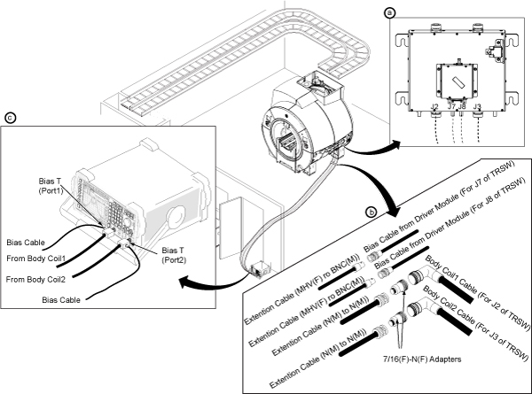
Body coil tuning using network analyzer navigation
Procedure
- Ch1 measurement will start. Click [OK] to record f1.
Figure 22. Message for Ch1 measurement 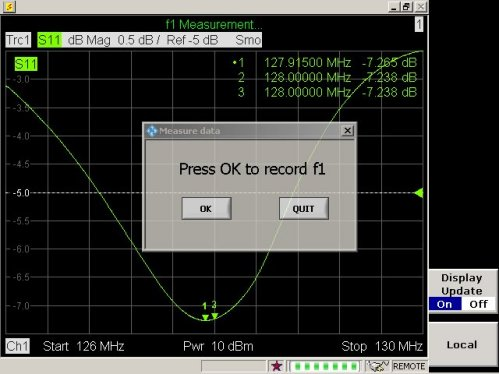
Note: In case the following screen comes up, it means S11 Magnitude is unusual.Figure 23. Message for unusual S11 Magnitude 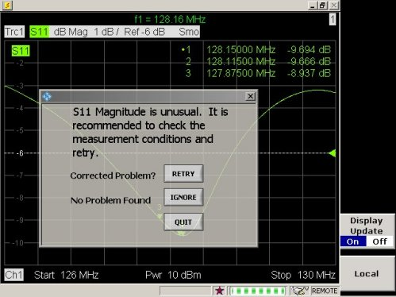
In this case, please check the following conditions.
-
The cradle is not located in the magnet bore.
-
Bridge is installed in the the magnet.
-
Phantom is setup correctly per the System Pre-setup for Tuning section.
-
Cables are connected correctly per System Pre-setup for Tuning section.
-
Driver module DD bias in 'Body' mode. (-13.6VDC unloaded. ~2.6VDC Loaded, Exact voltages not critical.)
Notice
Once problem is corrected, click [Retry]. If there is no problem for the condition above, click [Ignore].
-
- Ch2 measurement will start. Click [OK] to record f2.
Figure 24. Message for Ch2 measurement 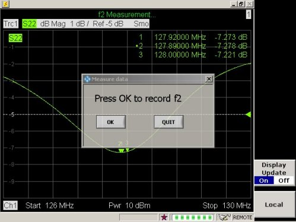
Note: In case the following screen comes up, it means S22 Magnitude is unusual.Figure 25. Message for unusual S22 Magnitude 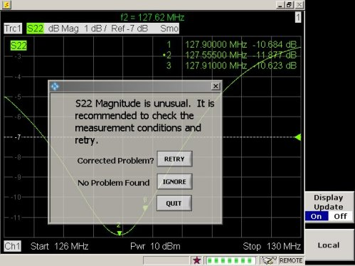
In this case, please check the following conditions.
-
Cradle is not located in the magnet bore.
-
Bridge is installed in the the magnet.
-
Phantom is setup correctly per System Pre-setup for Tuning section.
-
Cables are connected correctly per System Pre-setup for Tuning section.
-
Driver module DD bias in 'Body' mode. (-13.6VDC Unloaded, ~2.6VDC Loaded, Exact voltages not critical.)
Notice
Once problem is corrected, click on [Retry].
-
- From here, display on the network analyzer will navigate the operation. Follow the instruction shown in the display of the network analyzer.Note: If the body coil is within specification, a pop-up which is shown in Figure 35 will appear. You are done tuning.
-
If VC1 CW or VC1 CCW is shown, turn VC1 using stick to tune f1 until [VC1 TUNED!] is displayed. Once [VC1 TUNED!] is displayed, click [OK] to go to next step.
Figure 26. Display 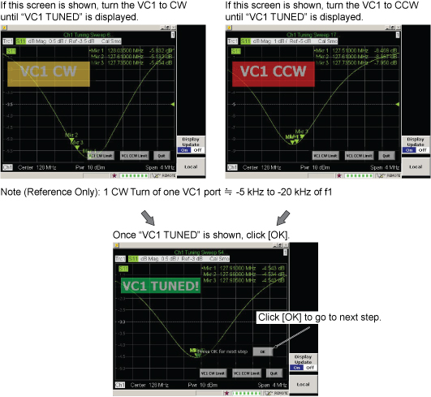
Figure 27. Tuning 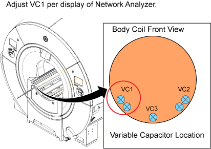
Note: There are two ports for VC1 and you can adjust either one. If the one reached to the limit, turn the other one for adjustment.Notice -
If VC2 CW or VC2 CCW is shown, turn VC2 using stick to tune f2 until [VC2 TUNED!] is displayed. Once [VC2 TUNED!] Is displayed, click [OK] to go to next step.
Figure 28. Display 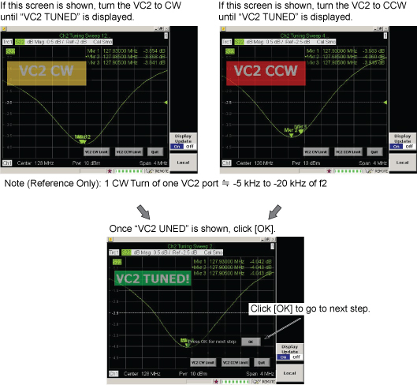
Figure 29. Tuning 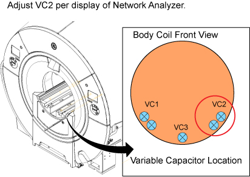
Note: There are two ports for VC2 and you can adjust either one. If the one reached to the limit, turn the other one for adjustment.Notice -
If VC3 CW or VC3 CCW is shown, turn VC3 using stick to tune f3 until [VC3 TUNED!] is displayed. Once [VC3 TUNED!] Is displayed, click [OK] to go to next step.
Notice Figure 30. Display 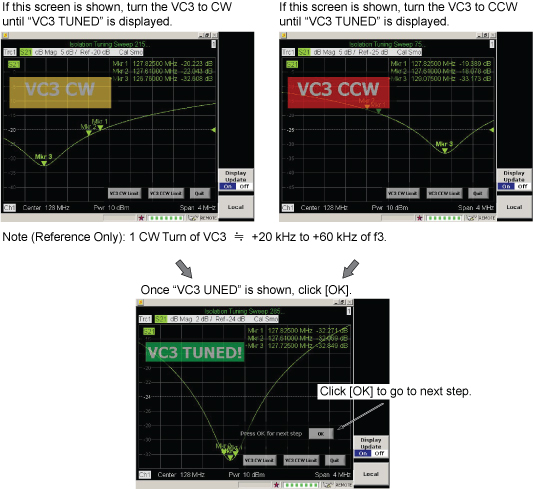
Figure 31. Tuning 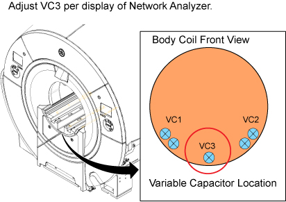
Notice Note: If VC3 Tuned does not display even though tuning is performed according to the displayed instruction, select [VC3 CW Limit] or [VC3 CCW Limit] and start VC1 tuning per displayed instruction. If the VC1 Tuning and VC2 tuning are completed properly, the dialog box shown in Figure 33 will display. Turn the VC3 to CCW limit according to the displayed instruction and select [Retry]. Then, VC3 adjustment will be available.Note: In case the following screen comes up, it means S11, S22, or S21 Magnitude is unusual.Figure 32. Message for unusual S11, S22, or S21 Magnitude 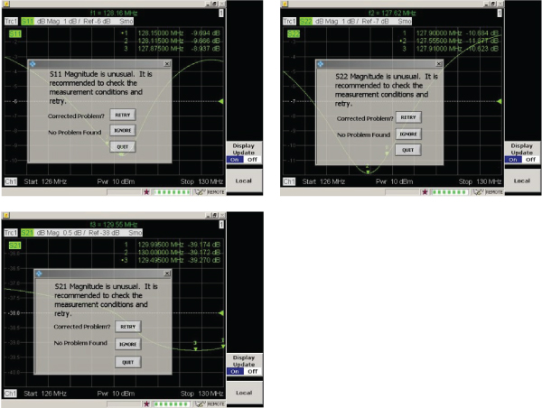
In this case, please check the following conditions.
-
The cradle is not located in the magnet bore.
-
The bridge is installed in the magnet.
-
Phantom is setup correctly per System Pre-setup for Tuning section.
-
Cables are connected correctly per System Pre-setup for Tuning section.
-
Driver module DD bias in 'Body' mode. Driver module DD bias in 'Body' mode. (-13.6VDC Unloaded, ~2.6VDC Loaded, exact voltages not critical.)
Notice Once problem is corrected, click on [Retry].
-
-
If you see the screen shown in Figure 33, turn the VC3 to CCW limit according to the displayed instruction and click [Retry] to start tuning.
Note: If you see this screen second time, turn the VC3 to CCW limit and click [Retry] and try again.If you see this screen three times or more, click [Quit]. It will navigate to troubleshooting.
Figure 33. RETRY or QUIT message 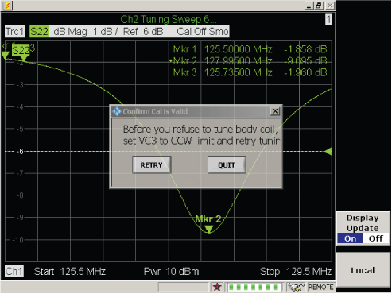
-
- Measured data is calculated and the result is shown on the display. Proceed per result as follows.
- Note: The measured data will be archived in the following directory of the network analyzer.Once the screen shown in Figure 35 is displayed, Body Coil tuning is completed. Go to Step 2.
-
C:\Program\Pioneer 3T Body Coil Tuning
-
File Name example: September 19, 2012 @ 5_35 PM Data.txt
-
Select ‘Firmware Exit’, ‘My Computer’ to save to USB memory stick.
Notice
Note: The value in following screen is an example. Check the Pass or fail result.Figure 35. Measured Data (All Pass) 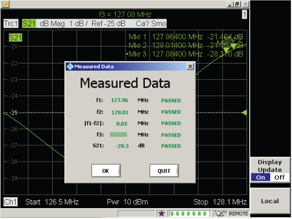
-
- If any of result is failed, following kind of screen shows up. Click [OK] and follow the navigation screen to perform more tuning.Note: The value in following screen is an example. Check the Pass or fail result.
Figure 36. Measured data (Failed) 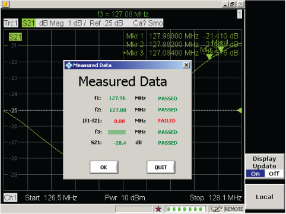
Troubleshooting
Procedure
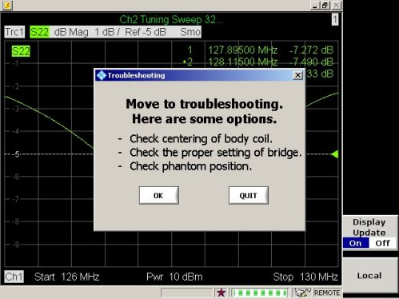
-
Perform Body Coil Isolation.
-
Confirm bridge alignment and height correct per installation manual.
-
Check phantom position.
-
Replace the body coil.